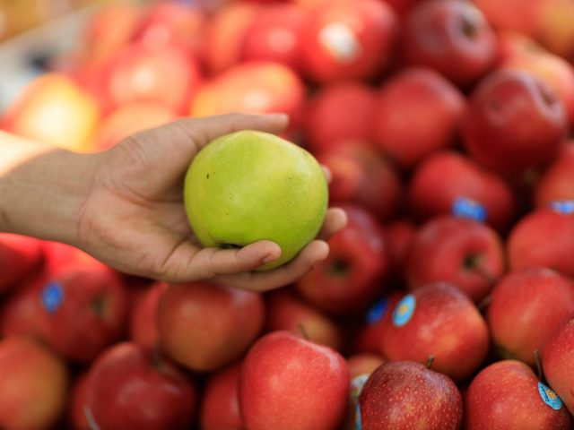

VOCABULARY · WORD UP 單字複習 UNIT 33
O．O 開頭
WORD UP「O」的 37 個字（o'clock 到 ox）。紅色＝要複習，藍色標籤＝WORD UP 標熟記、還要在這裡考對。
共 37 個單字．點 🔊 聽發音

1o'clockadv.
…點鐘
整點才用
It's seven o'clock.現在七點整。
2obeyv.
服從；遵守
obey the rules
We should obey the traffic rules.我們應該遵守交通規則。
3objectn./v.
物體；反對
object to + V-ing 反對
What is that object on the table?桌上那個東西是什麼？
4occurv.
發生
= happen；過去式 occurred
The accident occurred last night.那場意外發生在昨晚。

5oceann.
海洋
the Pacific Ocean 太平洋
Whales live in the ocean.鯨魚住在海洋裡。
6Octobern.
十月
Halloween is in October.萬聖節在十月。
7offadv./prep.
離開；關掉
turn off 關掉；take off 脫掉、起飛
Turn off the TV.把電視關掉。
8offerv./n.
提供；提議
offer + 人 + 東西
He offered me a seat.他讓座給我。
9officen.
辦公室
Dad works in an office.爸爸在辦公室上班。
10officern.
官員；警官
police officer 警察
The police officer helped the old lady.警察幫助那位老太太。
11officialadj./n.
官方的；官員
English is an official language in Singapore.英文是新加坡的官方語言之一。
12oftenadv.
常常
t 常不發音
I often go swimming in summer.我夏天常去游泳。

13oiln.
油
不可數
Don't use too much oil.不要用太多油。

14oldadj.
老的；舊的；…歲
How old are you?
How old is your brother?你哥哥幾歲？
15omitv.
省略；遺漏
過去式 omitted
Don't omit any words.不要漏掉任何字。
16onceadv.
一次；曾經
once a week 一週一次
I go to the library once a week.我一週去圖書館一次。
17onen./pron.
一；一個
I have one sister.我有一個姊姊。

18onionn.
洋蔥
Cutting onions makes me cry.切洋蔥讓我流淚。

19onlyadj./adv.
唯一的；只
He is the only child in his family.他是家裡的獨生子。
20openv./adj.
打開；開著的
The store is open until ten.那家店營業到十點。
21operatev.
操作；動手術
Can you operate this machine?你會操作這台機器嗎？

22operationn.
手術；操作
Grandpa had an operation on his heart.爺爺動了心臟手術。
23opinionn.
意見；看法
in my opinion 依我看
In my opinion, the movie is boring.依我看，這部電影很無聊。
24opportunityn.
機會
= chance
This is a great opportunity.這是個大好機會。

25orangen./adj.
柳橙；橘色的
an orange
I'd like a glass of orange juice.我要一杯柳橙汁。

26ordern./v.
順序；命令；點餐
in order 依序；May I take your order?
May I take your order?請問要點什麼？
27ordinaryadj.
普通的
It was just an ordinary day.那只是普通的一天。
28organizationn.
組織；機構
She works for an international organization.她在一個國際組織工作。
29organizev.
組織；整理
Let's organize a party for Mom.我們幫媽媽辦個派對吧。
30outadv.
出去；在外
go out 出去
Let's go out for dinner.我們出去吃晚餐吧。

31outsideadv./prep.
在外面
inside 在裡面
The kids are playing outside.孩子們在外面玩。

32ovenn.
烤箱
Put the cake in the oven.把蛋糕放進烤箱。
33overpassn.
天橋；高架橋
underpass 地下道
Use the overpass to cross the road.走天橋過馬路。

34overseasadj./adv.
海外的；在國外
= abroad
My cousin is studying overseas.我表哥在國外留學。

35ownadj./v.
自己的；擁有
on one's own 獨自
I have my own room.我有自己的房間。

36ownern.
主人；擁有者
Who is the owner of this bike?這台腳踏車是誰的？

37oxn.
公牛；牛
複數 oxen
The ox is pulling a cart.那頭牛在拉車。
FOCUS
重點整理
| 說法 | 中文 | 例子 |
|---|---|---|
| turn on / turn off | 打開 ／ 關掉（電器） | turn off the light |
| in my opinion | 依我看 | In my opinion, it's too expensive. |
| once / twice / three times | 一次 ／ 兩次 ／ 三次 | once a day |
| offer + 人 + 東西 | 提供某人… | offer him a job |
| operate / operation | 操作、動手術 ／ 手術 | have an operation |
| organize / organization | 組織（動詞）／ 組織（名詞） | organize a trip |
| my own / on my own | 我自己的 ／ 我獨自 | my own room ／ do it on my own |
ox 的複數是 oxen；o'clock 只用在整點：seven o'clock。